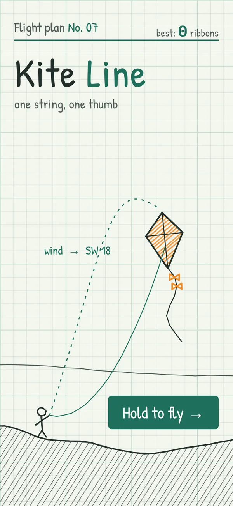
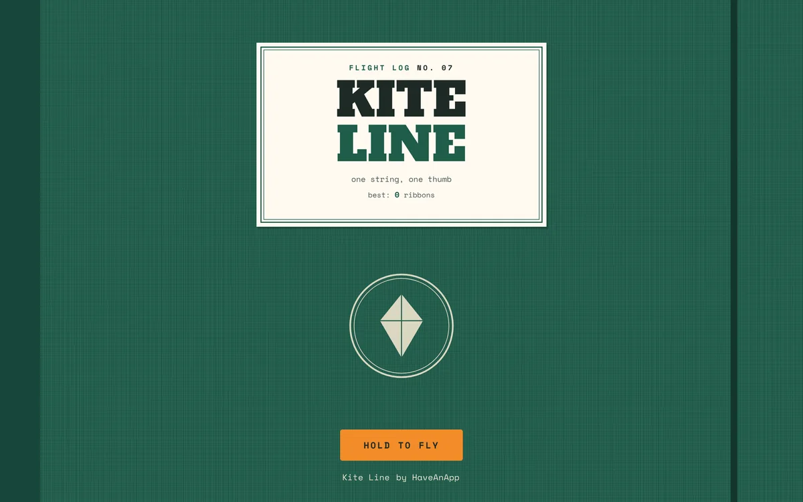
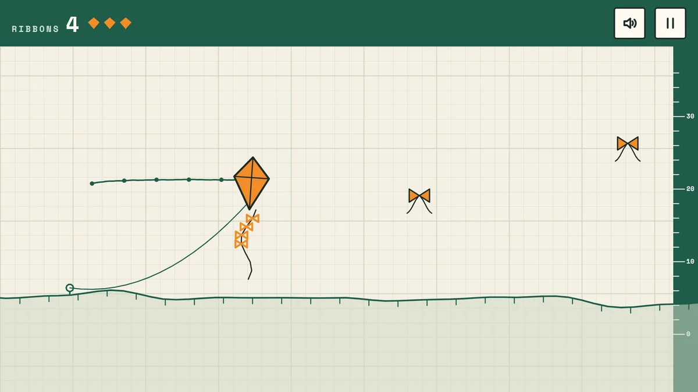

Three designs of the real first screen inside the chosen style. They differ in composition, type, palette and flavour.
Picked: design A. What they liked in the others: acceptance stand-in for the person: A. I liked the dark night page of C; use it for the end of a flight
A · Margin doodle recommendedpicked
The back page of a school exercise book where someone has lettered KITE LINE and drawn a kite flying off it.
Style: Notebook Sketch · Composition: huge hand-lettered wordmark stacked on the left, tilted, the kite tied to it flying to the top right; the button circled in pen underneath
Type: Caveat / Patrick Hand · Flavour: cheeky, personal, scribbled in a lesson ·
Phone 390×844
Desktop 1440×900Play frame
B · Flight plan
A page from a kite-flyer's logbook on graph paper: a numbered plan, the wind noted, the course dotted across the page.
Style: Notebook Sketch · Composition: notebook header and modest title at the top, the dotted flight course sweeping through the middle as the hero, a solid button bottom right
Type: Patrick Hand / Patrick Hand · Flavour: methodical, outdoorsy, a hobbyist's careful notes ·

Phone 390×844

Desktop 1440×900

Play frame
C · Night sketchbook
A black-paper sketchbook drawn in chalk pencil after dark, the kite in coloured pencil with a long bowed tail.
Style: Notebook Sketch · Composition: centred and symmetrical: the kite high in the middle, typewritten caps below it, a chalk circle for the button; lots of dark air
Type: Space Mono / Space Mono · Flavour: quiet, dreamy, a last flight before bed ·